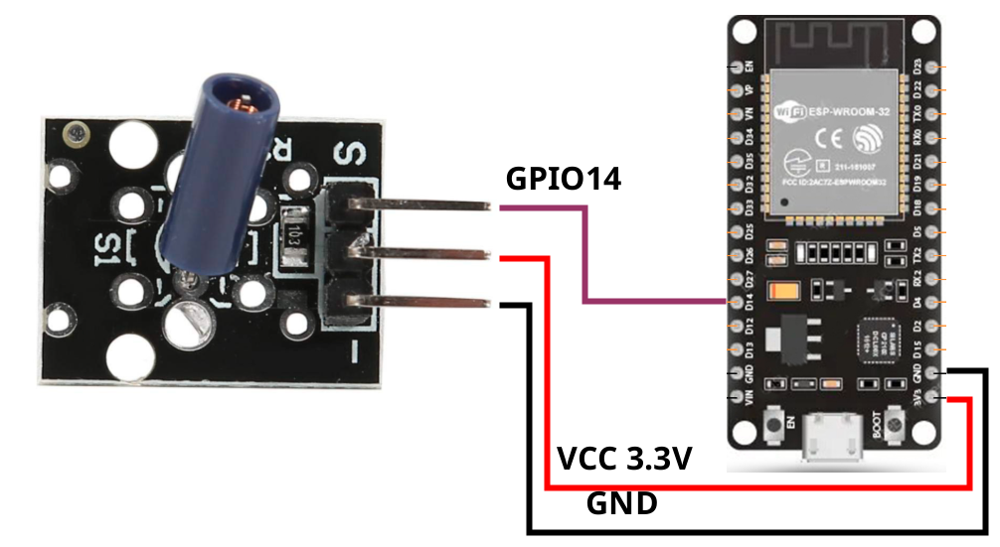

Document: Technical Documentation
Sensor Model: KY-002 Vibration Switch Sensor Module
Platform: ESP32 Microcontroller
Version: 1.0
Date: March 2026
The KY-002 is a digital vibration sensor module based on a mechanical vibration switch. It detects shock and vibration events and outputs a digital signal. This sensor is widely used in anti-theft systems, motion detection applications, and environmental monitoring projects.
The module features a simple interface with three pins, making it easy to integrate with microcontrollers like the ESP32. When vibration is detected, the sensor produces a momentary LOW signal that can be captured by the microcontroller's digital input pin.
The KY-002 sensor operates using a mechanical vibration switch that contains a spring contact mechanism. Under normal conditions (no vibration), the internal contacts remain in a stable position, and the output signal is HIGH. When vibration or shock occurs, the spring contacts momentarily close, causing the output to go LOW.
The sensor responds to various types of vibration including impacts, knocks, and continuous oscillations. The response time is very fast, typically less than 1ms, making it suitable for real-time monitoring applications.
| Parameter | Value |
|---|---|
| Operating Voltage | 3.3V - 5V DC |
| Output Type | Digital (TTL compatible) |
| Output Signal | HIGH (no vibration), LOW (vibration detected) |
| Response Time | < 1ms |
| Operating Temperature | -10°C to +50°C |
| Module Dimensions | 18.5mm × 15mm |
| Mounting Holes | M3 compatible |
| Interface | 3-pin header (VCC, GND, Signal) |
The KY-002 sensor connects directly to the ESP32 without additional components. The recommended connection is as follows:
| KY-002 Pin | ESP32 Pin | Description |
|---|---|---|
| GND | GND | Common ground connection |
| VCC | 3.3V | Power supply (3.3V recommended) |
| Signal | GPIO 14 | Digital input with internal pull-up |

This example demonstrates how to read the vibration sensor and display events on the Serial Monitor:
This advanced example counts vibration events and implements debouncing to avoid false triggers:
The KY-002 can be mounted on doors, windows, or valuable objects to detect unauthorized access or tampering. When vibration is detected, the system can trigger an alarm or send a notification.
Multiple KY-002 sensors can be deployed to create a basic seismic monitoring network. While not as precise as professional seismometers, they can provide early warning signals for strong vibrations.
Industrial equipment monitoring to detect abnormal vibrations that may indicate mechanical failure or maintenance requirements. The sensor can be attached to motors, pumps, or rotating machinery.
Interactive installations where knocking or tapping triggers specific actions, such as turning on lights, playing sounds, or activating displays.
Detecting impacts or movements of parked vehicles to trigger anti-theft alarms or send alerts to the vehicle owner.
Monitoring shipment packages during transit to detect rough handling or excessive shaking that could damage sensitive contents.
Problem: Sensor triggers without actual vibration.
Solution: Check power supply stability, add debouncing delay, ensure proper grounding, and verify connections are secure.
Problem: Sensor does not respond to vibration.
Solution: Verify wiring connections, check that INPUT_PULLUP is enabled, test sensor with known vibration source, and confirm GPIO pin is not damaged.
Problem: Sensor works inconsistently.
Solution: Check for loose connections, verify power supply voltage, clean sensor contacts, and ensure proper mounting.
The KY-002 vibration sensor provides a simple and effective solution for detecting mechanical vibrations and shocks. Its digital output interface makes it easy to integrate with the ESP32 platform, enabling a wide range of monitoring and security applications.
By following the connection guidelines and programming examples in this document, developers can quickly implement vibration detection systems with minimal hardware requirements and straightforward software implementation.